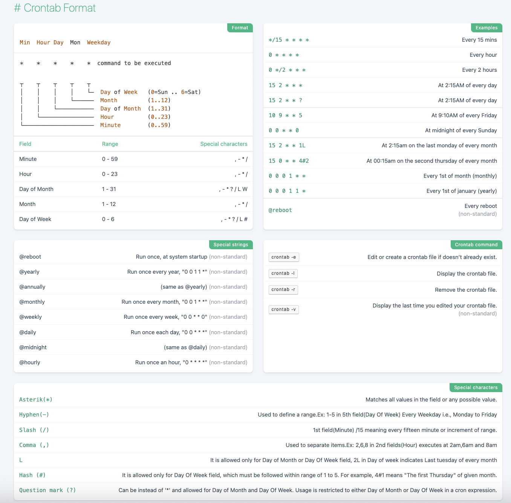

2. crontab
Linux 的 crontab 用于定时任务调度。
Attention
系统休眠的时候 crontab 定时任务可能不会正确执行。
2.1. 安装与配置
安装
apt-get install cron
1$ ll /etc | grep cron
2drwxr-xr-x 1 root root 4.0K 2022-11-19 13:19:04 cron.d/
3drwxr-xr-x 1 root root 4.0K 2022-11-19 13:24:23 cron.daily/
4drwxr-xr-x 2 root root 4.0K 2022-11-19 11:45:48 cron.hourly/
5drwxr-xr-x 2 root root 4.0K 2022-11-19 11:45:48 cron.monthly/
6drwxr-xr-x 2 root root 4.0K 2022-11-19 11:45:48 cron.weekly/
7-rw-r--r-- 1 root root 1.1K 2022-11-19 14:38:02 crontab
查看 /etc/crontab ：
1# cat /etc/crontab
2# /etc/crontab: system-wide crontab
3# Unlike any other crontab you don't have to run the `crontab'
4# command to install the new version when you edit this file
5# and files in /etc/cron.d. These files also have username fields,
6# that none of the other crontabs do.
7
8SHELL=/bin/bash
9PATH=/usr/local/sbin:/usr/local/bin:/sbin:/bin:/usr/sbin:/usr/bin
10
11# Example of job definition:
12# .---------------- minute (0 - 59)
13# | .------------- hour (0 - 23)
14# | | .---------- day of month (1 - 31)
15# | | | .------- month (1 - 12) OR jan,feb,mar,apr ...
16# | | | | .---- day of week (0 - 6) (Sunday=0 or 7) OR sun,mon,tue,wed,thu,fri,sat
17# | | | | |
18# * * * * * user-name command to be executed
1917 * * * * root cd / && run-parts --report /etc/cron.hourly
2025 6 * * * root test -x /usr/sbin/anacron || ( cd / && run-parts --report /etc/cron.daily )
2147 6 * * 7 root test -x /usr/sbin/anacron || ( cd / && run-parts --report /etc/cron.weekly )
2252 6 1 * * root test -x /usr/sbin/anacron || ( cd / && run-parts --report /etc/cron.monthly )
该文件配置了 系统级 定时任务所使用的环境变量 SHELL 和 PATH。对于系统级 crontab，在 cron 表达式和命令之间，多了一个 use-name 域。
/etc/crontab 还配置了系统级定时任务的执行时间，这些任务放在 cron.hourly cron.daily cron.weekly cron.monthly 等目录下。
/etc/cron.d 目录也是用来放系统级定时任务，不同的任务写在不同的文件中，定义的时候和 /etc/crontab 一样也要有 user-name 域。
服务
定时任务依赖 cron 服务。
启动服务：
service cron start查询服务状态：
service cron status停止服务：
service cron stop重启服务：
service cron restart
指令
crontab [ -u user ] { -l | -r | -e }
crontab -l查看定时任务列表。
定时任务保存在文件
/var/spool/cron/crontabs/<user-name>。
crontab –e编辑定时任务：
* * * * * command定时任务保存在文件
/var/spool/cron/crontabs/<user-name>。
crontab –r删除定时任务。
crontab –r -i删除前询问。
日志
首先需要安装并启动 rsyslog 服务：
1apt-get install rsyslog
2service rsyslog start
crontab 的日志配置保存在 /etc/rsyslog.conf 或 /etc/rsyslog.d/50-default.conf 。
在配置文件中将 cron 对应的那行取消注释：
cron.* /var/log/cron.log
crontab 的日志保存在 /var/log/cron.log 。
2.2. 表达式
* * * * * command to be executed
┬ ┬ ┬ ┬ ┬
│ │ │ │ └─ Day of Week (0=Sun .. 6=Sat)
│ │ │ └────── Month (1..12)
│ │ └─────────── Day of Month (1..31)
│ └──────────────── Hour (0..23)
└───────────────────── Minute (0..59)
Field |
Range |
Special characters |
|---|---|---|
Minute |
0 - 59 |
|
Hour |
0 - 23 |
|
Day of Month |
1 - 31 |
|
Month |
1 - 12 |
|
Day of Week |
0 - 6 |
|
Note
对于用户级的 crontab，如果定时任务未启动，可能是因为所要执行的命令找不到，因为 crontab 读到的 PATH 变量不一定与用户的 PATH 相同，此时应该使用命令的绝对路径，比如 /usr/local/bin/python 。也可以在命令前定义 PATH ：
* * * * * PATH=$PATH:/usr/local/bin; command
或者使用系统 PATH ：
* * * * * . /etc/profile; command
Attention
% 是 crontab 的关键字符，因此命令中如果包含 % 需要转义，比如：
* * * * * echo $(date +"\%Y-\%m-\%d \%H:\%M:\%S")
2.3. Cheatsheet
2.4. 参考资料
Crontab cheatsheet
在线 crontab 表达式
Why crontab scripts are not working?
crontab(5) — Linux manual page